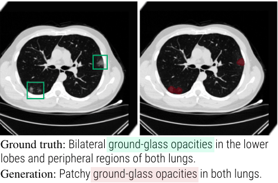
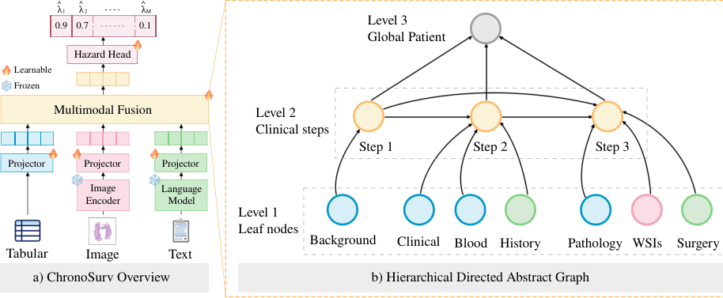
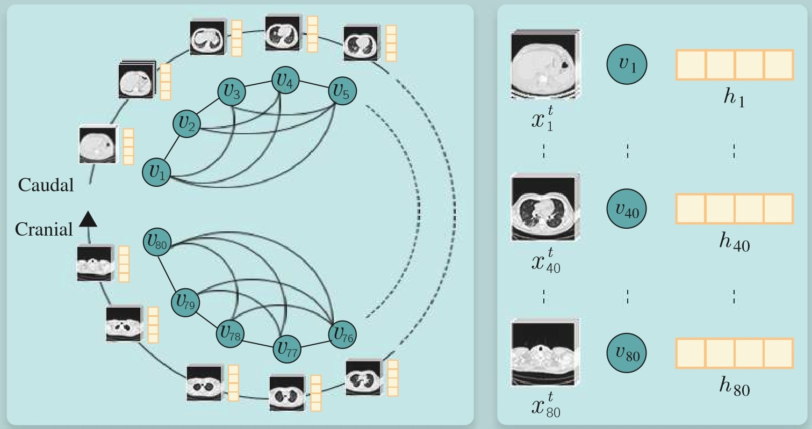
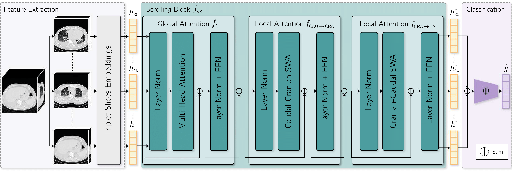
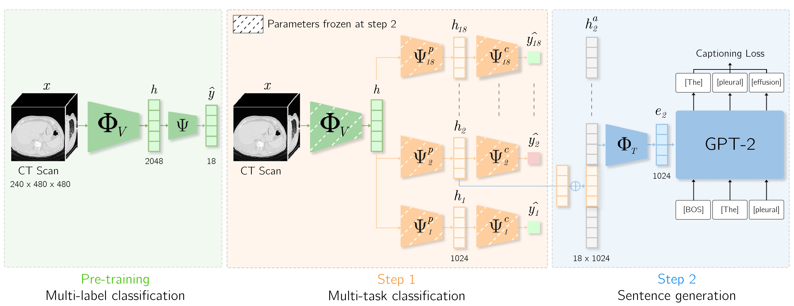
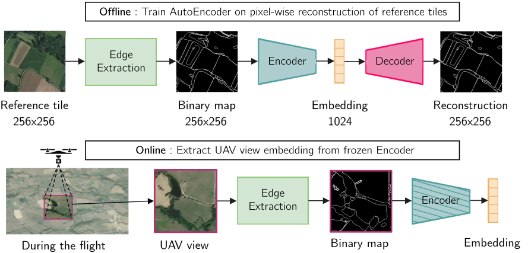

About
I am a final-year PhD candidate at the University of Lyon, based at Hospices Civils de Lyon
and working in collaboration with Philips. My work spans computer vision, multimodal and
vision-language representation learning, with applications to 3D medical imaging, abnormality
classification and report generation.
Before my PhD, I was a research intern at Thales and
Centre Léon Bérard.
Publications
* equal contribution
-

MICCAI 2026SpotlightEarly acceptUniCT: A Unified Joint Multi-Task Framework for 3D Chest CT Abnormality Analysis
-

-

-

-

-
